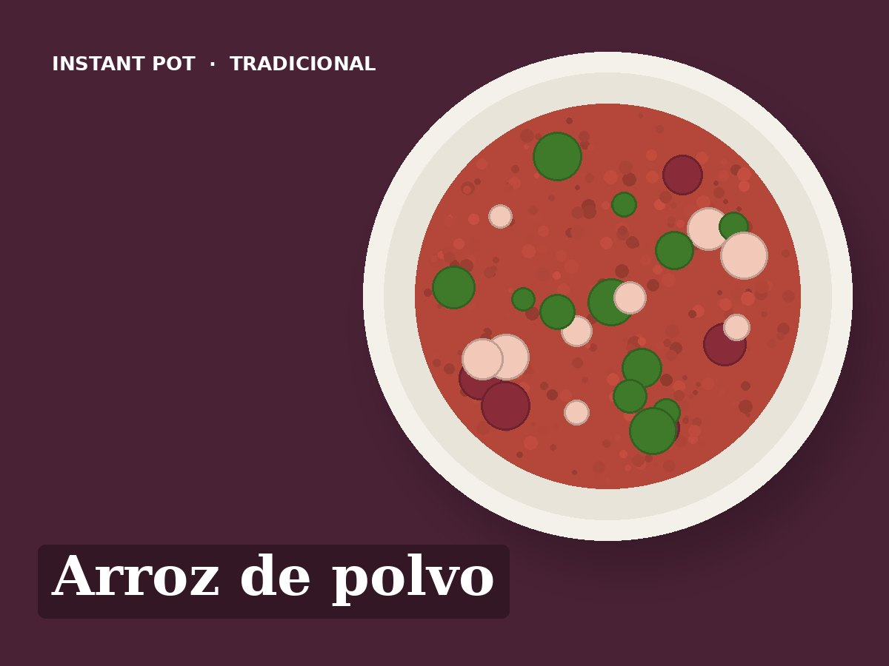

Arroz de polvo
Ingredientes
- 1 kg de polvo descongelado
- 1 cebola
- 2 dentes de alho
- 1 tomate maduro
- 250 g de arroz carolino
- 100 ml de vinho branco
- 250 ml de água
- 1 folha de louro
- Coentros picados
- 2 colheres de sopa de azeite
- Sal q.b.
Preparação
- Pôr o polvo inteiro com meia cebola, o louro e a água.
- Pressão alta, 10 minutos. Libertação natural 10 minutos.
- Retirar o polvo e cortar em pedaços. Guardar a água da cozedura e completar com água até 750 ml.
- Saltear: azeite, a outra meia cebola, o alho e o tomate picados, 3 minutos. Deitar o vinho e raspar o fundo.
- Juntar o arroz e os 750 ml de líquido. Provar o sal.
- Pressão alta, 4 minutos. Libertação rápida.
- Juntar o polvo e os coentros e mexer. Deve ficar malandrinho.